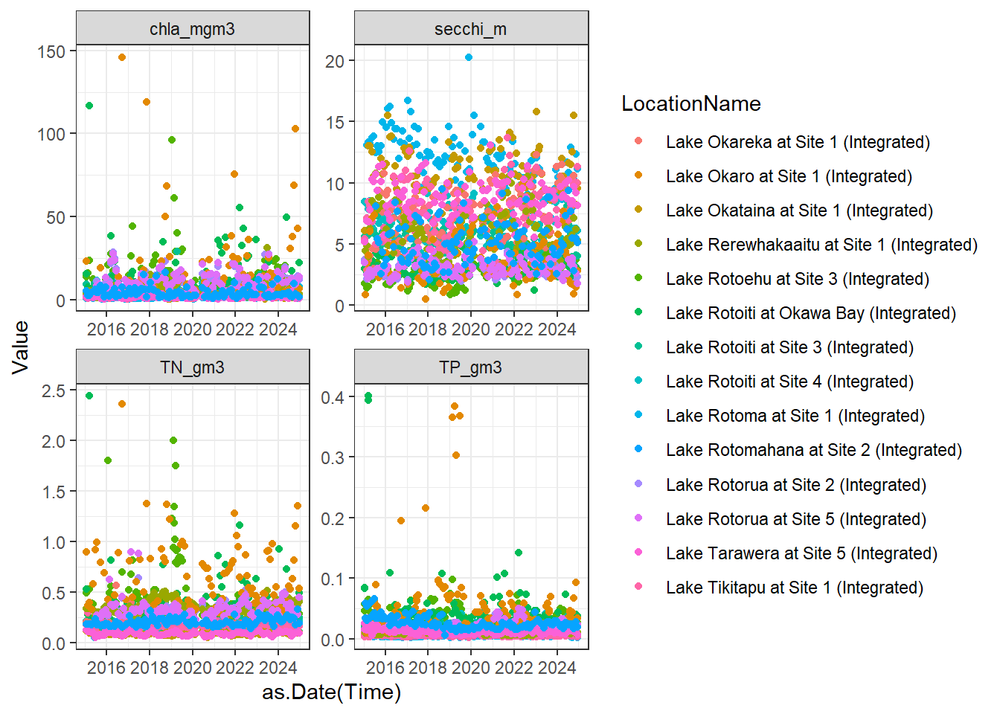
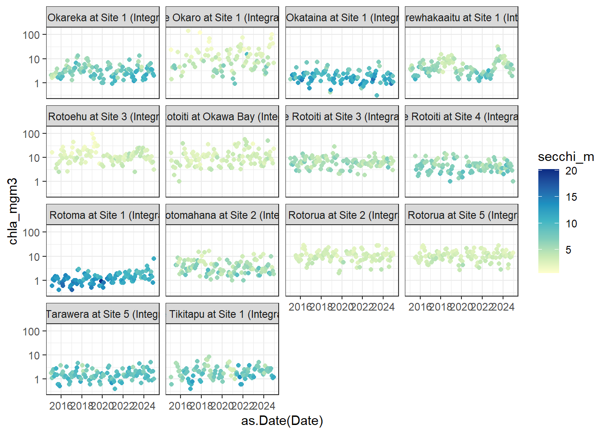
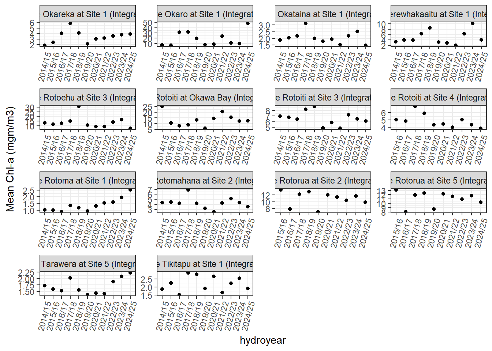
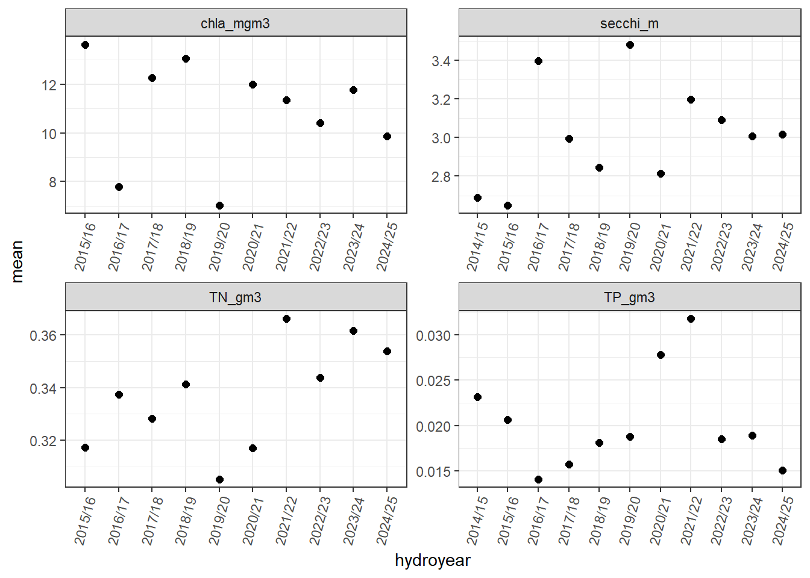
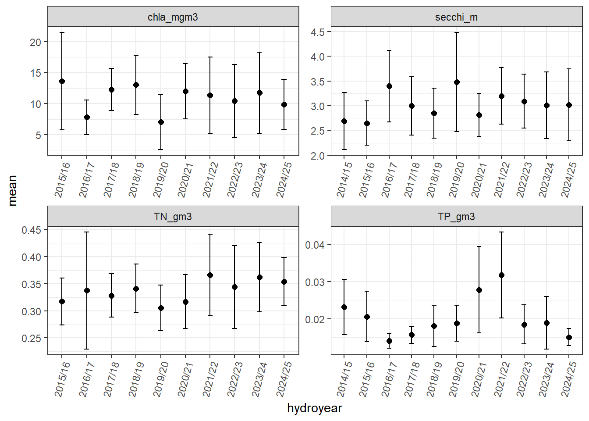
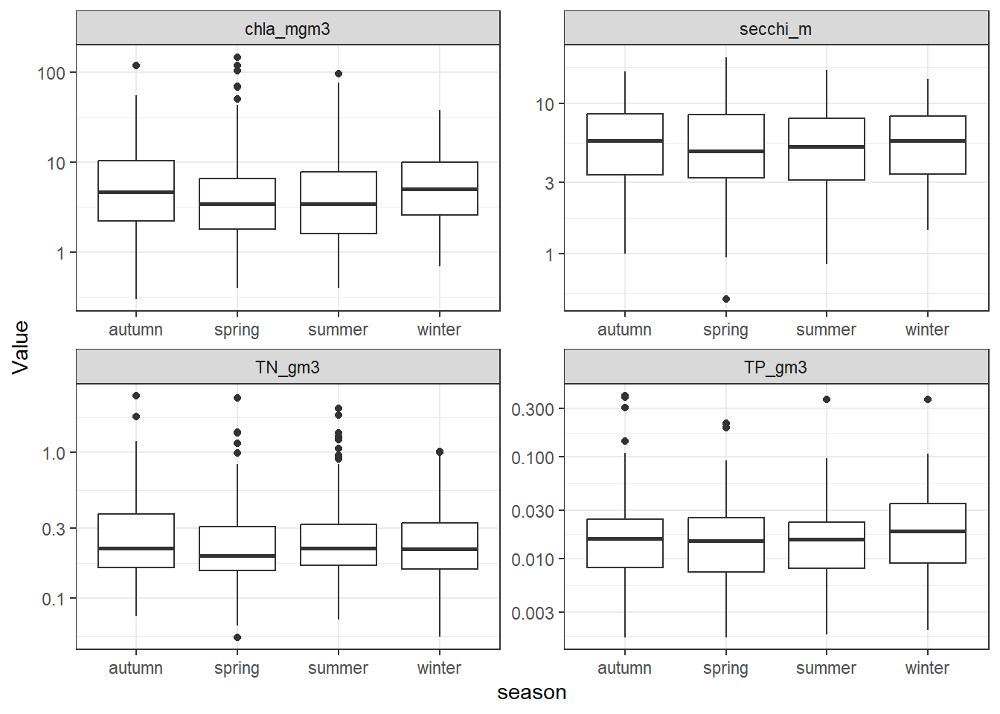
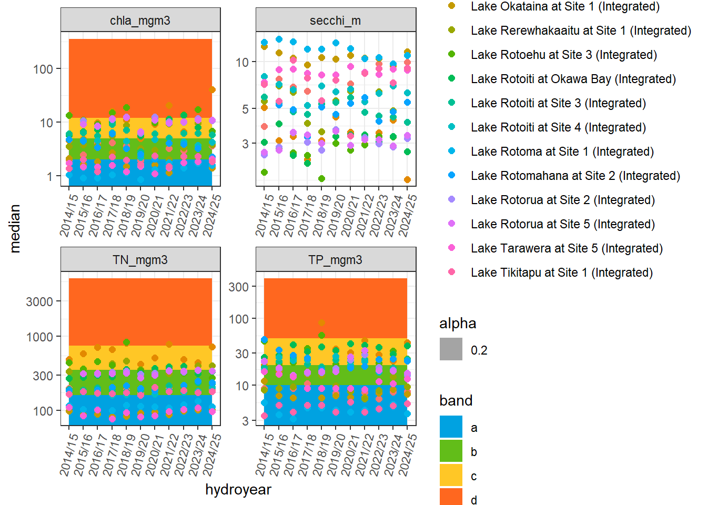
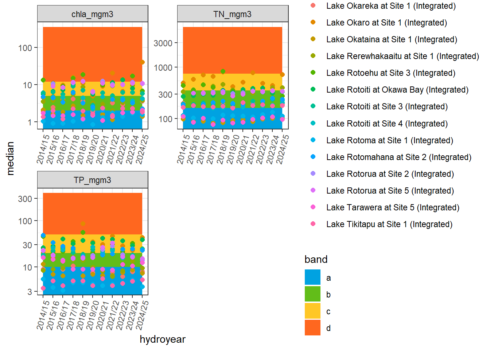

library(tidyverse)Warning: package 'tidyverse' was built under R version 4.4.3library(lubridate)
library(BoPRC2025) This lesson is designed to provide you with experience in manipulating and plotting time series data.
The main packages that we will use in this tutorial are:
Before attempting to install these packages, make sure your Primary CRAN Repository is set to:
To check this, click ‘Tools’ –> ‘Global Options’ –> ‘Packages’. Click ‘Change’ if you need to adjust this.
You can download most packages by clicking on the ‘Install’ button on the ‘packages’ tab in the lower right window pane. Then in the Install Packages popup, select ‘Repository (CRAN)’ from the ‘Install from’ drop box and type the name of the package you wish to download (e.g., dplyr).
Once all of these packages are installed you can load them using the ‘library’ function:
Warning: package 'tidyverse' was built under R version 4.4.3First we will load in our data. This data has been downloaded from Aquarius using the R script which you can find at scripts/download_data_aquarius.R if you’d like to see how the data were downloaded. For today, we are skipping that step and reading in directly from a .csv file which was written after the Aquarius download.
Now, look at the wq dataframe by clicking on it in the environment and familiarise yourself with the columns. There is a lot of metadata here, but let’s select just a few which we want to work with, using the select function
One of the columns that we have selected is the Time column, which includes both a date and a time. It is always best practice is to format date/time objects with the appropriate timezone, otherwise R will assume a timezone, and that can lead to the wrong date being set for your timestamp. Here, we will use a function called parse_date_time which looks at the Time column, and then provides a list (using c()) of potential formats that the column will be in. Here, we list two formats, the first one has YMD and HMS (hours, minutes, seconds), the second one just has YMD, as some of the values in the Time column don’t have an associated time next to the date. We pair this with the mutate function, which we will learn more about below.
NOTE: there are many ways to format/parse dates and times in R. This is just one example!
Challenge 1: What is the structure of wq now that you have updated the Time column?
'data.frame': 6469 obs. of 5 variables:
$ LocationName: chr "Lake Rotoma at Site 1 (Integrated)" "Lake Rotoma at Site 1 (Integrated)" "Lake Rotoma at Site 1 (Integrated)" "Lake Rotoma at Site 1 (Integrated)" ...
$ Time : POSIXct, format: "2015-01-20 07:53:00" "2015-02-17 07:40:00" ...
$ Value : num 0.117 0.115 0.111 0.123 0.124 ...
$ Parameter : chr "TN (g/m^3)" "TN (g/m^3)" "TN (g/m^3)" "TN (g/m^3)" ...
$ Unit : chr "g/m^3" "g/m^3" "g/m^3" "g/m^3" ...Using the unique function, let’s see what lakes which are included in this dataset.
[1] "Lake Rotoma at Site 1 (Integrated)"
[2] "Lake Rotoehu at Site 3 (Integrated)"
[3] "Lake Rotoiti at Site 4 (Integrated)"
[4] "Lake Rotoiti at Site 3 (Integrated)"
[5] "Lake Rotoiti at Okawa Bay (Integrated)"
[6] "Lake Rotorua at Site 2 (Integrated)"
[7] "Lake Okataina at Site 1 (Integrated)"
[8] "Lake Okareka at Site 1 (Integrated)"
[9] "Lake Tikitapu at Site 1 (Integrated)"
[10] "Lake Rerewhakaaitu at Site 1 (Integrated)"
[11] "Lake Okaro at Site 1 (Integrated)"
[12] "Lake Rotorua at Site 5 (Integrated)"
[13] "Lake Tarawera at Site 5 (Integrated)"
[14] "Lake Rotomahana at Site 2 (Integrated)" Challenge 2: Using the same unique function, what water quality variables are included in this dataset, in the Parameter column?
The names of the parameters have spaces and symbols in them which can be annoying to work with in R. Let’s clean that up. We will use a function called recode which can be used to change the name of a value in a column. Here, we are saying take the wq dataframe, and mutate the column Parameter such that the values of Parameter which currently equal “TN (g/m^3)”, will be rewritten as “TN_gm3”. We will also do this for TP here.
As with anything in R, there are multiple ways to rename entries within a column like we have just done. We will rename the TN and TP values in the Parameter column using the case_when function so you can learn another method. Sometimes one method may be more intuitive to you than another.
wq <- wq %>%
mutate(Parameter = case_when( # create a new `Parameter` column based on a set of conditions
Parameter == "TN (g/m^3)" ~ "TN_gm3", # first condition: if the value of Parameter is "TN (g/m^3)", change it to "TN_gm3"
Parameter == "TP (g/m^3)" ~ "TP_gm3", # same but for TP
TRUE ~ Parameter)) # for any other cases, keep the original values of Parameter
# provide case_when exampleChallenge 3: We have done this for TN and TP. Now try using the same method to rename chlorophyll-a and Secchi depth using either recode or case_when. Make sure to name the new columns chla_mgm3 and secchi_m (we will use these same names later in the code so they will need to match!)
Now let’s make a plot of our data, using the facet_wrap function to display the different parameters
ggplot(wq, aes(x = as.Date(Time), y = Value, color = LocationName)) + geom_point() +
facet_wrap(~Parameter, scales = "free") + theme_bw()
pivot_wider functionLet’s say we’re interested in a plot of chl-a, but we want to color it based on the Secchi depth in that lake. Our dataset is in long format, so in order to do this, we need to make it into wide format (e.g., instead of Parameters as a column, TN, TP, chla, and Secchi will be their own columns, with the values in that column). We will use the pivot_wider function to do this, where you give the function the name of the column where the new columns will come from (here names_from = 'Parameter'), and the name of the column where the actual numbers will come from (here values_from = 'Value')
Warning: Values from `Value` are not uniquely identified; output will contain list-cols.
• Use `values_fn = list` to suppress this warning.
• Use `values_fn = {summary_fun}` to summarise duplicates.
• Use the following dplyr code to identify duplicates.
{data} |>
dplyr::summarise(n = dplyr::n(), .by = c(LocationName, Time, Unit,
Parameter)) |>
dplyr::filter(n > 1L)That threw some warnings, so let’s look at the dataframe and see if everything looks ok. When we open up wq_wide, we see there are a lot of “NULL” values for the different columns–that doesn’t look right. That is because our Time column is very specific, and includes not just dates but times which are not common across all the parameters. The time components isn’t really important in this case. We also have the Unit column, which is not the same across parameters and is causing an issue. Let’s create a Date column, remove Time and Unit, and try making the dataframe wide again
wq_wide <- wq %>%
mutate(Date = as.Date(Time)) %>%
select(-Time, -Unit) %>%
pivot_wider(names_from = "Parameter", values_from = "Value")Warning: Values from `Value` are not uniquely identified; output will contain list-cols.
• Use `values_fn = list` to suppress this warning.
• Use `values_fn = {summary_fun}` to summarise duplicates.
• Use the following dplyr code to identify duplicates.
{data} |>
dplyr::summarise(n = dplyr::n(), .by = c(LocationName, Date, Parameter)) |>
dplyr::filter(n > 1L)Hmm, that still throws a warning. If we look at wq_wide again, we see that there are some columns which have two values in them (e.g., Lake Rotoma on 2015-01-20 has two entries for TP). To fix this, let’s take the average on a given day for a given lake if there is more than one reading. We will need to introduce a couple of new functions to accomplish this.
group_by and summarise functionsgroup_by is a tidyverse function which allows you to do calculations by different groups (e.g., the LocationName column). It is usually paired with another function which does the calculation. For example, summarise is another tidyverse function which, as it sounds, summarises by a given function. I often use this to take the mean, minimum, or some other summary statistic. This function results in a shorter dataframe, because you’ve summarised the values by your grouping factors. We will pair group_by with summarise to create summary statistics for each lake.
wq_wide <- wq %>%
mutate(Date = as.Date(Time)) %>% # keeping these lines in our workflow to remove Time and Unit
select(-Time, -Unit) %>%
group_by(LocationName, Date, Parameter) %>%
summarise(Value = mean(Value, na.rm = TRUE)) %>%
pivot_wider(names_from = 'Parameter', values_from = 'Value') # then we pivot widerViola! No warnings and our dataframe looks good (make sure you look at it)!! Ok, now let’s make a plot of chl-a over time, but colored in by Secchi (our original goal before all that data manipulation…)
wq_wide %>%
filter(!is.na(secchi_m)) %>% # some values have NA for secchi so we will remove those
ggplot(aes(x = as.Date(Date), y = chla_mgm3, color = secchi_m)) +
geom_point() +
facet_wrap(~LocationName) +
scale_color_distiller(palette = 'YlGnBu', direction = 2) +
theme_bw() +
scale_y_log10() # this log-transforms the y axis and makes it easier to see the variability across sitesWarning: Removed 34 rows containing missing values or values outside the scale range
(`geom_point()`).
# scale_color_distiller changes the color scheme, you can google scale_color_distiller to find out other palettes you can use, direction = 2 just changes whether the scales goes from blue to yellow with blue as high or low, in this case, we want blue to be high. try changing direction = 1 and see what happensChallenge 4a: Now that we’ve used pivot_wider, try to use pivot_longer to turn your dataframe back into longer format
wq_long <- wq_wide %>%
pivot_longer(TN_gm3:secchi_m, names_to = "Parameter", values_to = "Value")
# first you specify which columns are getting pivot-ted longer, we can use the
# colon : to say all the columns between TN and secchi
# being able to pivot between wide and long format is really helpful for
# different types of analyses and plotting!Challenge 4b: Now that you’ve made your wq_long dataframe, try making a plot with Date on the x-axis, Value on the y-axis, color by LocationName, and facet_wrap by Parameter. Use geom_line instead of geom_point
We’ve now plotted the full time series but we want to get a more summarised overview of the water quality across the lakes, so we will calculate some summary statistics. Let’s calculate the annual means for each variable and lake. First we need to create a new column which represents the year. We will use the function year in the lubridate package
Often, we actually need to calculate annual averages by the hydroyear, instead of the year. To do this, let’s use the Bathing_Season function in the BoPRC2025 package, which calculates the hydroyear.
wq_summary <- wq %>%
# mutate(year = year(Time)) %>%
mutate(hydroyear = Bathing_Season(Time)) %>%
group_by(LocationName, Parameter, hydroyear) %>%
summarise(mean = mean(Value, na.rm = TRUE), median = median(Value, na.rm = TRUE),
min = min(Value, na.rm = TRUE), max = max(Value, na.rm = TRUE), sd = sd(Value,
na.rm = TRUE))View the wq_summary dataframe and familiarise yourself with it. Let’s plot the chl-a data to visualize it a bit more clearly.
wq_summary %>%
filter(Parameter=='chla_mgm3') %>% # only plot TN
ggplot(aes(x = hydroyear, y = mean)) +
geom_point() +
facet_wrap(~LocationName, scales = 'free') +
theme_bw() +
theme(axis.text.x = element_text(angle = 75, hjust = 1)) +
ylab('Mean Chl-a (mgm/m3)')
Challenge 5: That’s a lot of lakes to wrap your head around. For this challenge, create a plot for just Lake Rotorua at Site 2, and facet by Parameter
wq_summary %>%
filter(LocationName=="Lake Rotorua at Site 2 (Integrated)") %>% # only plot TN
ggplot(aes(x = hydroyear, y = mean)) +
geom_point(size = 2) +
facet_wrap(~Parameter, scales = 'free') +
theme_bw() +
theme(axis.text.x = element_text(angle = 75, hjust = 1)) # this rotates the x-axis label since the LocationNames are long
We can also add the standard deviation as error bars using geom_errorbar.
wq_summary %>%
filter(LocationName=="Lake Rotorua at Site 2 (Integrated)") %>% # only plot TN
ggplot(aes(x = hydroyear, y = mean)) +
geom_point(size = 2) +
geom_errorbar(aes(ymin = mean - sd, ymax = mean + sd, width = 0.2)) +
facet_wrap(~Parameter, scales = 'free') +
theme_bw() +
theme(axis.text.x = element_text(angle = 75, hjust = 1)) # this rotates the x-axis label since the LocationNames are long
However, we know there is strong seasonal variability. Let’s look at seasonal means instead of overall
mutate and case_when functionsThe mutate function creates an entirely new column in our dataframe. This works similarly to summarise which we used above, except instead of summarising into a smaller dataframe, we use mutate across all our data and maintain the same number of rows. In order to do seasonal means, we need to first create a season identifier. We will pair mutate with case_when which you used earlier. This function chains together multiple ifelse statements. Essentially, it allows you to perform a multiple conditional operations which says if(this condition), then do X, if not, do Y. Here, we are saying if the month of our time column is 12, 1, 2, make the new column ‘season’ = ‘summer’, and so on for the other month combination. The last argument TRUE ~ NA_character_ says, if none of the conditions are met, assign it as NA.
# go back to our original wq dataframe, not the summarised one and add a new
# column: season
wq <- wq %>%
mutate(season = case_when(month(Time) %in% c(12, 1, 2) ~ "summer", month(Time) %in%
c(3, 4, 5) ~ "autumn", month(Time) %in% c(6, 7, 8) ~ "winter", month(Time) %in%
c(9, 10, 11) ~ "spring", TRUE ~ NA_character_)) # default case, if neededLet’s plot the range of values across each season
ggplot(wq, aes(x = season, y = Value)) + geom_boxplot() + facet_wrap(~Parameter,
scales = "free") + theme_bw() + scale_y_log10()
Challenge 6: It’s nice to see the boxplots, but we want the actual numbers for median, min, max, etc.. Calculate summary statistics for each lake, season, and parameter. HINT: We will bring back our friends group_by and summarise for this.
wq_season_summary <- wq %>%
group_by(LocationName, season, Parameter) %>%
summarise(mean = mean(Value, na.rm = TRUE), median = median(Value, na.rm = TRUE),
min = min(Value, na.rm = TRUE), max = max(Value, na.rm = TRUE), sd = sd(Value,
na.rm = TRUE), perc_95 = quantile(Value, 0.95))
# Open up your dataframe and see if all looks good. There should be one value
# for each season, lake, and parameterWe have a dataframe with the ranges of the NPSFM bands for each variable. We will need to read this in, merge together with our wq_summary dataframe, which has the annual median values for each variable. Then we will plot the data. But first we will have to do a little data manipulating…
The values of TN and TP in bands$Parameter are in mg/m3, whereas in wq_summary they are in g/m3. We need to first convert TN and TP in wq_summary into mg/m3 before we can merge the two dataframes together.
wq_summary <- wq_summary %>%
select(LocationName, Parameter, hydroyear, median) %>% # select the columns we need
mutate(median = ifelse(Parameter %in% c('TN_gm3', 'TP_gm3'), median*1000, median),
Parameter = recode(Parameter,
'TN_gm3' = 'TN_mgm3',
'TP_gm3' = 'TP_mgm3'))
print(unique(wq_summary$Parameter))[1] "TN_mgm3" "TP_mgm3" "chla_mgm3" "secchi_m" Now that we have the columns in both of the dataframes wq_summary and bands set up properly, we can combine the two dataframes using the function left_join. This is another tidyverse function that merges two dataframes based on one or more common columns. It will keep all the rows from the first (left) dataframe and add any matching information in the second (right) dataframe. Here the matching columns is Parameter
Warning in left_join(wq_summary, bands, by = "Parameter"): Detected an unexpected many-to-many relationship between `x` and `y`.
ℹ Row 1 of `x` matches multiple rows in `y`.
ℹ Row 5 of `y` matches multiple rows in `x`.
ℹ If a many-to-many relationship is expected, set `relationship =
"many-to-many"` to silence this warning.This gives us a warning that there are “many-to-many relationships between x and y.” Sometimes this warning means that there is something wrong with your dataframe merge, but in this case, this is actually ok. It is telling us that in bands there are multiple matches for a single value of Parameter in wq_summary. That is because there are four values of bands$band (a, b, c, and d) which correspond to a single row in wq_summary. This has resulted in our new dataframe nof being much longer than the original wq_summary but that is expected behavior so we can ignore this warning.
Now that we have our matching dataframe, we need to create maximum and minimum x values for which the color shading will be mapped onto our plot. These simply need to correspond to maximum and minimum years of our dataframe
If we look at nof again, we should have a minimum and maximum column for both x and y. We will use these in our plotting by adding a layer using geom_rect to map the colors of the different bands behind our points
ggplot(nof, aes(x = hydroyear, y = median, color = as.factor(LocationName))) + geom_rect(aes(xmin = x_min,
xmax = x_max, ymin = y_min, ymax = y_max, fill = band, alpha = 0.2), color = NA) +
geom_point(size = 2) + scale_fill_manual(values = c("#00A2E1FF", "#62BD19FF",
"#FFC726FF", "#FF671FFF")) + facet_wrap(~Parameter, scales = "free") + labs(color = "Site") +
theme_bw() + theme(axis.text.x = element_text(angle = 75, hjust = 1)) + scale_y_log10()Warning in scale_y_log10(): log-10 transformation introduced infinite values.Warning: Removed 153 rows containing missing values or values outside the scale range
(`geom_rect()`).
Challenge 7: Secchi depth is not currently assessed as part of the NPSFM. Let’s remove it from our plot using the filter function:
nof %>%
filter(Parameter != "secchi_m") %>%
ggplot(aes(x = hydroyear, y = median, color = as.factor(LocationName))) + geom_rect(aes(xmin = x_min,
xmax = x_max, ymin = y_min, ymax = y_max, fill = band), color = NA) + geom_point(size = 2) +
scale_fill_manual(values = c("#00A2E1FF", "#62BD19FF", "#FFC726FF", "#FF671FFF")) +
facet_wrap(~Parameter, scales = "free", nrow = 2) + labs(color = "Site") + theme_bw() +
theme(axis.text.x = element_text(angle = 75, hjust = 1)) + scale_y_log10()Warning in scale_y_log10(): log-10 transformation introduced infinite values.